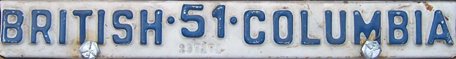

The strip now uses its dedicated reconstruction from the two original strip photographs, independently of the base plate’s serial-font setting and research toggle. Its rounded block letters, wider “1” and raised “51” are retained in mounted, loose and top-mounted views.
Open the current plate · BCpl8s source article
These comparisons preserve the original photographs, including paint wear and embossed shoulders. They show an approximate whole-strip alignment using the photograph edges as the frame. The short photograph is tightly cropped; this overlay does not establish precise physical spacing or certify identical tooling.

Full source photographRemaining approximation: the shared outlines are smoothed photo averages. The short-strip layout reduces the complete run uniformly to fit the available width; this page exposes that size and spacing difference. The small stamped strip number uses a serif substitute.
Checked 2026-10-05. All 19 character occurrences remain identical across six serial-font settings, three mounting views and both research settings, on both widths. The raised year stays inside the 36 mm strip.